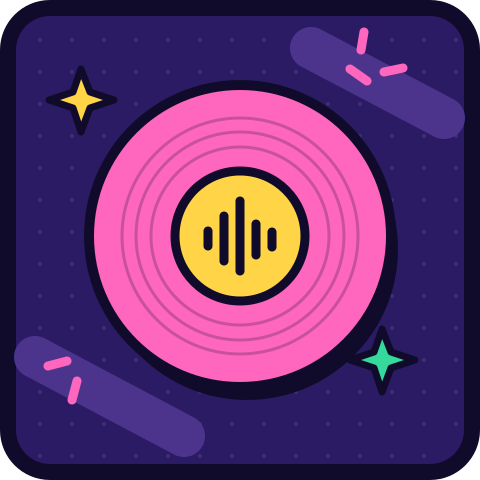

MÜZİĞİ HİSSET. ŞARKIYI BUL.
O şarkıyı
duydum!
Bir saniye dinle. Aklındaki şarkıyı yaz.
Tanıdık bir melodi, yeni bir meydan okuma.
SAHNE SENİN
Nasıl oynuyoruz?
Bir oda, aynı şarkılar, herkesin kendi tahmini.
Kapalı betada arkadaş odaları açık. Hesabına giriş yap, 5 haneli oda kodunu paylaş ve 10 farklı şarkıda yarış.
ÜÇ ADIMDA OYUNDASIN
Kulağın hatırlar.
- 01
Kesiti dinle
İlk ipucun, şarkının yalnızca 1 saniyesi.
- 02
Adını yaz
Şarkıyı tanıdıysan tahminini gönder.
- 03
Bilemedin mi? Pas.
Daha uzun dinle; kazanabileceğin puan azalır.
KENDİ SAHNENİ KUR
Adın da
oyunda olsun.
Oyuncu adını ve avatar rengini seç. Profilini hazırla, arkadaşlarınla aynı odada buluş.
Arkadaş odaları için giriş yapman gerekiyor. Solo ve ranked bu kapalı betada kapalı.
Giriş yaptıktan sonra Profilim menüsünü aç ↗AYNI ŞARKI. FARKLI KULAKLAR.
Sahneyi paylaş.
Odanı kur veya arkadaşının koduyla katıl.
10 farklı şarkıda, en az dinleyen en çok puanı toplar.
Odanı kur
Bir kod oluştur, arkadaşlarına gönder. Herkes geldiğinde maçı sen başlat.
Ekibe katıl
Arkadaşının paylaştığı 5 haneli kodu yaz. Aynı lobide buluşun.
EKİP TOPLANIYOR
Oda hazır.
Oyuncular bekleniyor.
Kimler burada?
MAÇ PLANI
10 şarkı.
Tek bir ekip.
Herkes aynı şarkıyı duyar. Pas ve yanlış tahmin yalnız senin kesitini uzatır.
1 saniyeden başla; gerekirse 16 saniyeye kadar dinle.
Herkes bitirince veya 60 saniye dolunca cevap açılır.
10 turun toplam puanı maç sıralamasını belirler.
SON NOTA ÇALDI
Maç sıralaması
SOLO · KENDİ RİTMİNDE
İLK NOTAYI YAKALA
1 saniye
Başlamak için kesiti dinle.
BU KESİTİ BİLİRSEN 1000 PUAN

ŞARKI BUYDU10 şarkı bitince yeni bir karışık döngü başlar.